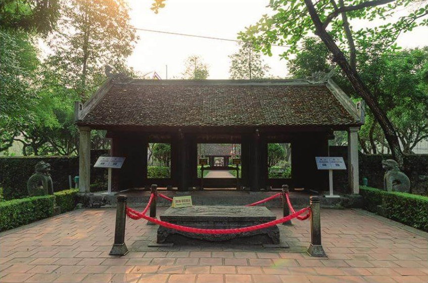

CỐ ĐÔ HOA LƯ
Nghi môn ngoại và Nghi môn nội đền Đinh

Trong kiến trúc truyền thống của các công trình tín ngưỡng, Nghi Môn không đơn thuần là lối ra, vào mà còn mang ý nghĩa phân định giữa không gian bên ngoài và không gian thờ tự linh thiêng. Theo quan niệm xưa, khi bước qua Nghi môn với ngưỡng cửa cao, du khách cần cúi đầu giữ thái độ trang nghiêm, thành kính. Đây cũng được xem là bước chuyển từ không gian sinh hoạt đời thường sang không gian văn hóa tâm linh, nơi lưu giữ những giá trị văn hóa của dân tộc.
Hai lớp cửa có kiến trúc tương tự nhau là Nghi Môn Ngoại và Nghi Môn Nội. Hai Nghi môn được làm dưới dạng ngôi nhà có 3 gian, có kết cấu kiểu Ba hàng chân cột. Kiến trúc này được xác nhận là kết cấu kiến trúc Ba hàng chân cột sớm nhất của Việt Nam còn lưu giữ được cho đến nay. Niên đại thế kỷ XVII. Hệ thống Rường, cột liên kết chắc chắn. Đề tài trang trí ở đây khá đa dạng, chủ đạo với hình ảnh Rồng. Với kỹ thuật chạm bong, chạm lộng, Rồng ở đây với thân mập, đao mác lá hỏa. Chúng được chạm dưới dạng Rồng ổ, Rồng đàn qua đó gửi gắm ước vọng cầu mong sự sinh sôi và thịnh vượng muôn đời.

Nghi Môn Nội, bên cạnh hình tượng Rồng thiêng, các nghệ nhân dân gian còn gửi gắm vào từng thớ gỗ những nét đẹp bình dị mà sâu lắng của đời sống con người. Đó là hoạt cảnh người đấu thú mạnh mẽ, truyền tải thông điệp về sức mạnh chinh phục thiên nhiên và khát vọng vươn lên của con người; hay hình ảnh những con thú nằm nghỉ ngơi tĩnh lặng, gợi nhắc về một khung cảnh làng quê Việt Nam thanh bình, yên ả. Đặc biệt, hình tượng con người được thăng hoa qua việc khắc họa các vũ nữ thiên thần cưỡi Rồng, với thân hình uyển chuyển trong tư thế múa mềm mại, uy quyền mà gần gũi.

Nhìn chung, những mảng chạm khắc tuy xuất phát từ cuộc sống thường nhật, nhưng lại sở hữu giá trị điêu khắc đỉnh cao và chứa đựng nhiều ý nghĩa biểu tượng. Sự kết hợp tinh tế giữa sự trang nghiêm của chốn linh thiêng và hơi thở gần gũi của đời sống đã thổi một luồng sinh khí mới, kiến tạo nên một không gian kiến trúc độc đáo, mang vẻ đẹp trầm mặc và đầy linh khí của đền thờ vua Đinh.